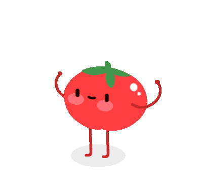

Study Helper
Tools to help you focus and study better
Pomodoro Timer
25:00
About Pomodoro
The Pomodoro technique is a simple time management method. You study for 25 minutes and then take a short break. This helps your brain stay focused and productive.
Use the timer to start your study session and stay focused. Small breaks help improve concentration.

Find Learning Projects
Search GitHub repositories and explore real-world code.